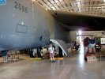
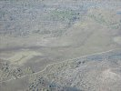

June
- 2nd
- 3rd
- 4th
- 5th
- 6th
- 7th
- 8th
- 9th
- 10th
- 11th
- 12th
- 13th
- 14th
- 15th
- 16th
- 17th
- 18th
- 19th
- 20th
- 21st
- 22nd
- 23rd
- 24th
- 25th
- 26th
- 27th
- 28th
- 29th
- 30th
July
- 1st
- 2nd
- 3rd
- 4th
- 5th
- 6th
- 7th
- 8th
- 9th
- 10th
- 11th
- 12th
- 13th
- 14th
- 15th
- 16th
- 17th
- 18th
- 19th
- 20th
- 21st
- 22nd
- 23rd
- 24th
- 25th
- 26th
- 27th
- 28th
- 29th
- 30th
- 31st
August
{kind=link}

Whilst Linda, going to bed at 2.30 am, decided to stay at the motel, Klaus and Edlef rose early to be at the airport where Edlef (still with a hoarse voice) had his final touch and go exercises with Darwin Flight Standards.At 10 am the rented car had to be returned, and so it was. A discussion with the rental company about some chips in the windscreen ended without agreement and without additional payment.
A taxi brought us to the Australian Aviation Heritage Centre (museum), where particularly a B52 bomber was attending attention. Lunch at a gas filling station, taxi to the airport, refueling - and making a flight plan all took its time so it was pretty late in the afternoon before we left Darwin.
The military maneuvre was still going strong with plenty of planes landing and starting, so we had to wait some time before getting the clearance for take off.

{kind=link}
Touch down in Kununurra was at 4.45pm (western time). Before getting a taxi to drive us to the backpackers, we had a bit of a talk to Jim, a local pilot that had some good suggestions on what to see and what not. For a change we (well, Linda did most of it) prepared our own dinner again - Mexican burritos - yum yum.